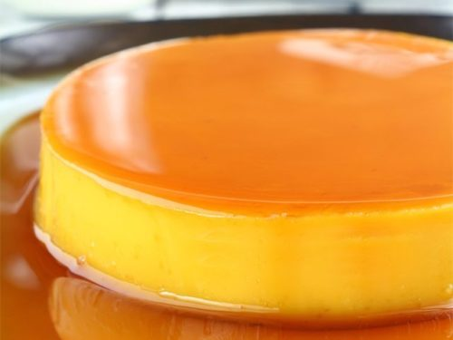

Leche Flan

Milky caramelized filipino dessert
Leche flan is a favorite dessert for its sweetness, creamy flavor with soft texture. By the name itself, it originates from Spain where the "leche" means "milk".
Philippines has been adopting the famous dessert for its simplicity to make and since most Filipinos love sweet floavorful foods
Ingredients
- 2 cups sugar
- 12 large egg yolks/li>
- 2 cups evaporated milk
- 2 cups sweetened condensed milk
- Pinch of salt
- 1 tablespoon lemon zest
Instructions
- Gather the ingredients.
- In a heavy thick-bottomed pan, melt the sugar over medium heat until it liquefies and turns an amber color, about 10 minutes depending on the power of your stove. There is no need to stir the sugar, but swirling the pan occasionally helps make a smoother and crystal-free syrup.
- Once the syrup acquires the color of amber, quickly remove it from the heat and pour it into the ramekin (or ramekins) to cover the bottom. Caramelized sugar hardens as it cools, and you need to work fast to transfer the syrup to the ramekins before it hardens in the pan.
- Start heating water in a steaming pot.
- In a mixing bowl, lightly stir the eggs yolks.
- Pour in the evaporated milk and sweetened condensed milk.
- Add the salt and lemon zest. Stir until the mixture is evenly blended. Stir, do not beat nor mix too hard, to avoid forming air bubbles in the mixture.
- Pour the egg yolk-milk mixture into the ramekin (or ramekins).
- Steam over simmering water while covered for 40 minutes. This will ensure that the steam is kept in and evenly cooks the flan. To test doneness, gently shake the pot or ramekins; the centers of the custard should jiggle slightly, but should be set and firm to the touch. You can also insert the tip of a knife or cake tester into the custard near the center; if the flan is still liquid, it needs more time in the steamer.
- Remove the ramekin (or ramekins) from the heat. Cool the leche flan then chill for at least 2 hours or overnight. Use a butter knife to loosen the sides of the flan then invert onto a serving plate or individual dessert plates. Optional: Serve with a fun sugar spun topping.
Contents of this page are based on the recipe found from here
Back to Main Page